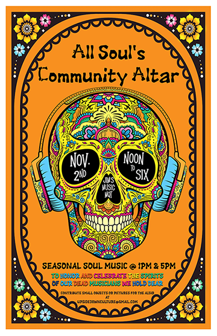
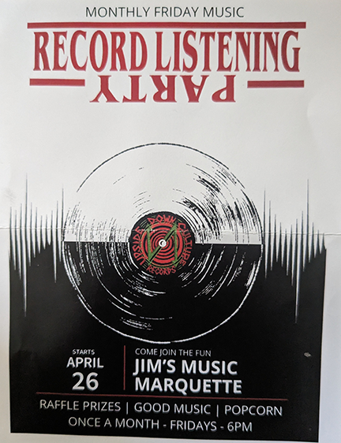

Events
“Revolution is the result of human activity and day one is today.” -Joe Jacobs
“Revolution is the result of human activity and day one is today.” -Joe Jacobs
Following upsidedownculture_ on Instagram is a good way to learn about the latest records coming into Jim’s and special events though an email is cool too.
Record listening parties were held on the last Friday of the month and though not well attended for the 4 months I hosted them I would like to do more. For now I will continue to host periodic events and figure out how to restart a regular listening party in 2025.
I believe we all need places to gather in person and appreciate that we made it through another day, or another month, and or perhaps that some of us did not make it. It's good to connect in person having a listen to what your dj has in store for you under any circumstances!
Within the Trumbullplex community in Detroit we lost a lot of our best homies too soon, young, older whatever. They were alive and then they weren’t. People need to try and keep going because in a sense their spirit lives on through us. As a way to come together we created a community altar at some point in the theatre space, which grew and became a permanent fixture for a time. (I’m sure it was inspired by the SW Detroit Latinx community Dia de los Muertos ofrendas.)
In that spirit, I decided to set up a small altar to honor the musicians we lost in 2024 (or at any other time) and offer up some space for people who may be grieving. The opportunity to hold space together or for people to drop in on their own felt like a good thing to do and try to host annually. With the help of Jon Teichman helping get the word out we had a great time playing records that Saturday afternoon coinciding with the Geoff and Jon's Record Show at the Ore Dock.
Soul & garage rock 45’s + Raffle Prizes + Good Music + Popcorn = a good time!
